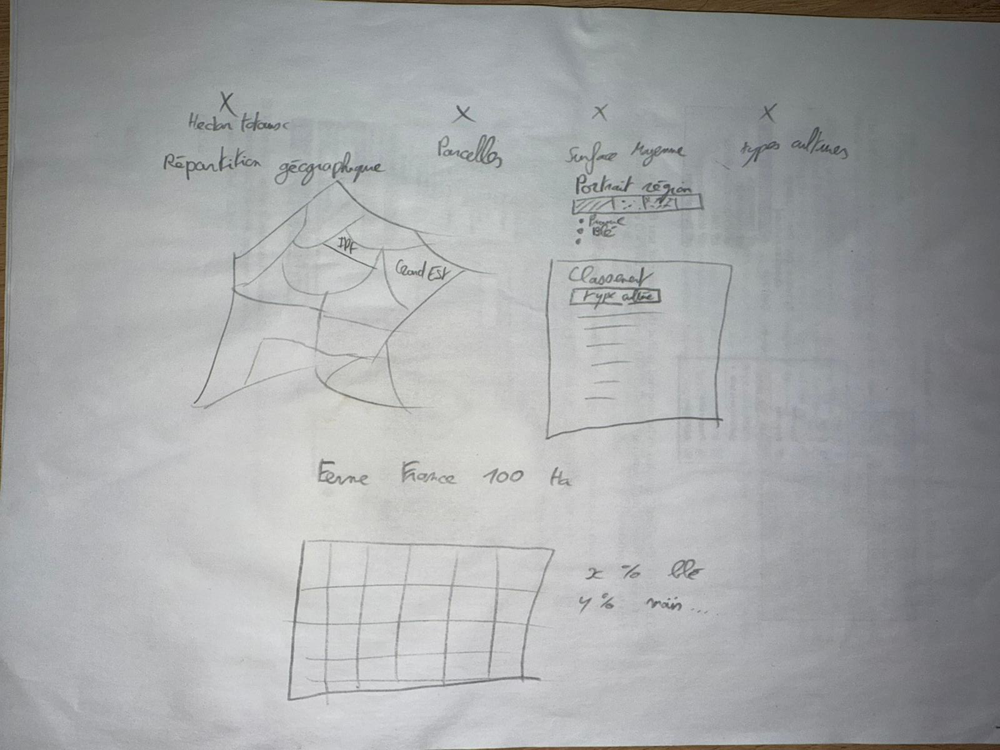
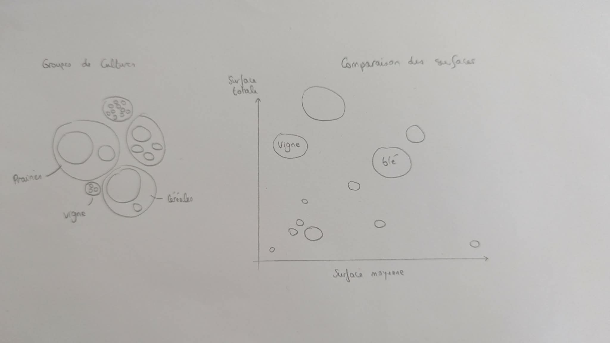

Ce projet a pour objectif de rendre accessibles, intelligibles et interactives les données agricoles françaises issues du Registre Parcellaire Graphique (RPG) (téléchargeable sur geoservices.ign.fr/rpg). Ce dernier, géré par l'Agence de Services et de Paiement (ASP) et l'IGN, rassemble les contours géographiques et les déclarations de cultures de plusieurs millions de parcelles sur le territoire.
L'application permet d'explorer les spécificités de chaque région et de visualiser la diversité des cultures qui composent le modèle agricole français ("La Ferme France").
A l'echelle nationale, nos visualisations montrent d'abord que les prairies et fourrages occupent la plus grande part de surface, devant les cereales. Elles montrent aussi que la structure parcellaire est tres desequilibree : les petites parcelles sont nombreuses, mais une part importante de la surface totale est portee par des parcelles plus grandes.
Les comparaisons regionales et le nuage de bulles confirment enfin qu'il n'existe pas un seul modele agricole. Selon les regions et les cultures, on observe des profils differents de surface totale, de taille moyenne de parcelle et de morcellement.
Le projet repose en partie sur des agregations et sur un echantillon pour certaines vues interactives, notamment la carte. Il est donc adapte a l'exploration et a la comparaison, mais pas a une lecture exhaustive et fine de chaque parcelle du RPG.
Les classes de taille retenues simplifient aussi des distributions continues. Elles sont utiles pour comparer rapidement les territoires, mais elles ne rendent pas toute la diversite des situations locales.
| Jeu de données | Type | Année | Format original | Source |
|---|---|---|---|---|
| Registre Parcellaire Graphique (RPG) Polygones et codes cultures des parcelles |
Agriculture | 2023 | .shp / .gpkg | IGN & ASP |
| Contours administratifs Régions et Départements de France |
Géographie | 2023 | .geojson | Admin Express |
| Nomenclatures Agricoles Mapping des codes (ex: MIS -> Maïs) |
Nomenclature | 2023 | TelePAC - Notice cultures 2023 |
La base complète du RPG comportant plusieurs millions de polygones, son affichage en temps réel dans le navigateur poserait des problèmes de performance. Pour permettre une exploration fluide, un échantillonnage aléatoire de 5 000 parcelles a été réalisé. Pour la carte de chaleur, un regroupement au barycentre des polygones a été utilisé pour calculer la densité locale.
Afin de réaliser l'exploration sous forme de bulles (Bubble Chart) et le panorama "Ferme France" (Waffle Chart), une table d'agrégation a été générée avec Python/Pandas. Les 300+ catégories du RPG ont été fusionnées en macro-familles (Céréales, Fourrages, Vignes, Oléagineux, etc.). Les surfaces ont été sommées au niveau national et redimensionnées proportionnellement pour l'affichage de notre Ferme de 500 Ha, ou simplement converties en rayon proportionnel (racine carrée de la surface) pour les bulles du cosmos.
La détermination du morcellement s'est appuyée sur l'aire (surface géométrique) réelle de chaque parcelle. Celles-ci ont été classifiées dans des bins de taille : Très Petite (<1 ha), Petite (1-5 ha), Moyenne (5-15 ha), Grande (15-50 ha), et Très Grande (>50 ha). L'API Turf.js a également permis d'associer en temps réel ou de compiler en amont (selon les vues) la région administrative englobant le centroïde de chaque parcelle (Point-in-Polygon).
import geopandas as gpd
import pandas as pd
# Chargement du shapefile massif du RPG
print("Chargement en cours...")
gdf = gpd.read_file("PARCELLES_GRAPHIQUES_2023.shp")
# Reprojection en WGS84 pour affichage web
if gdf.crs != "EPSG:4326":
gdf = gdf.to_crs("EPSG:4326")
# Regroupement par code culture et somme des surfaces physiques (Ha)
grp = gdf.groupby('CODE_CULTU')['SURF_PARC'].sum().reset_index()
# Jointure avec la nomenclature
nomen = pd.read_csv("nomenclature.csv")
result = pd.merge(grp, nomen, on='CODE_CULTU')
# Export pour D3.js
result.to_csv("cultures_statistiques.csv", index=False)
print("Export terminé !")Avant l'implémentation technique, le design et la disposition des visualisations ont été pensés sur papier. Voici les deux croquis de conception initiaux (sketches) qui ont guidé le développement de l'interface :


| Visualisation | Page | Technologie | Détails |
|---|---|---|---|
| Carte choroplèthe Vue nationale interactive |
National | D3.js v7 | Projection Mercator, GeoJSON des régions, colorimétrie par surface totale, interactivité au clic |
| Cosmos des Bulles Simulation de force physique |
Bulles | D3.js v7 | d3-force (collision, centrage), rayons proportionnels (√surface), Canvas pour performance |
| Courbes de distribution Densité par région |
Tailles | D3.js v7 | d3.line + d3.area, échelle logarithmique (d3.scaleLog), courbe cardinale lissée, toggle par région |
| Classement des cultures Ranking interactif |
National | D3.js v7 | Barres horizontales animées, dropdown culture, mise à jour dynamique |
| Top 15 Cultures Bar chart horizontal |
National | D3.js v7 | Axes automatiques, gradient de couleurs, tooltips avec surfaces détaillées |
| Carte parcellaire + Heatmap Exploration des parcelles |
Carte | Leaflet 1.9 | Tuiles OSM, plugin leaflet.heat, Turf.js pour le point-in-polygon côté client, filtres dynamiques |
| Waffle Chart Ferme France : 100 parcelles |
Tailles | SVG natif | Grille 10×10, chaque carré = 1% des parcelles, tooltips interactifs |
| Barres de fragmentation Comparaison régionale |
Tailles | HTML/CSS | Barres empilées (flexbox), 5 catégories de taille, taille moyenne affichée |
| Outil | Rôle |
|---|---|
| Python 3 | Scripts de génération des JSON (agrégation, échantillonnage, join spatial point-in-polygon) |
| Shapely / PyProj | Parsing WKB du GeoPackage, reprojection Lambert-93 → WGS84, calcul des centroïdes |
| SQLite | Accès au GeoPackage RPG (requêtes SQL sur les parcelles) |
| Turf.js | Point-in-polygon côté client pour la carte Leaflet (assignation région en temps réel) |
Suite aux retours formulés lors de la présentation orale, plusieurs améliorations significatives ont été apportées au projet. Ces modifications visent à corriger des erreurs identifiées, à améliorer la lisibilité de nos visualisations et à renforcer la rigueur de notre analyse.
Pour répondre aux interrogations sur les dénominations de taille initiales (comme "Micro" ou "Très grande"), les catégories ont été redéfinies après notre oral suite à l'intervention de M. Valéry Foliard, exploitant agricole en Mayenne (et oncle d'un membre de l'équipe). Son expertise terrain a permis d'aligner nos seuils analytiques sur des réalités d'exploitation concrètes.
Par exemple, les seuils considérés comme « très petits » ou « très grands » ont été rectifiés pour correspondre aux véritables dimensions parcellaires observées dans les différentes cultures. Les seuils exacts en hectares sont désormais explicitement affichés dans les légendes (ex: Très petite < 1 ha), et l'ajout des courbes de distribution en continu permet de s'affranchir des limites de ces classes discrètes.
Comme cela nous a été souligné durant l'oral, les courbes de distribution des tailles de parcelles présentaient une homogénéité suspecte entre les régions, les distributions étaient quasi-identiques d'une région à l'autre, ce qui n'est pas réaliste sur le plan agricole.
Après investigation, nous avons identifié la source du problème : nos scripts d'agrégation
(generate_distribution_curves.py et generate_fragmentation_regional.py)
extrayaient les deux premiers chiffres de l'identifiant de parcelle, persuadés qu'il s'agissait
d'un code postal, et donc que ces chiffres correspondaient au code département.
Or, lors de l'échantillonnage, les identifiants originaux du RPG ont été remplacés par des
identifiants internes numériques qui ne suivaient plus ce format.
Chaque « région » recevait donc un échantillon
aléatoire identique, ce qui expliquait l'uniformité des résultats.
La correction a consisté à remplacer l'extraction d'ID par un véritable
join spatial (point-in-polygon) : le centroïde de chaque parcelle est calculé à partir
de sa géométrie réelle, puis confronté aux polygones des régions
(regions.geojson) via un algorithme de ray-casting. Les résultats sont désormais bien
différenciés : par exemple, la Corse affiche une taille moyenne de 7,82 ha contre 1,88 ha pour la
Bretagne, ce qui correspond aux réalités agricoles de ces territoires.
Il nous a également été signalé que notre présentation comportait trop de visualisations
dispersées, ce qui rendait la lecture moins fluide et la présentation orale trop longue.
Pour répondre à cela, nous avons restructuré la page nationale
(overview-france.html) autour d'une carte choroplèthe interactive
en D3.js. Cette carte permet de regrouper les informations régionales en un seul élément visuel :
en cliquant sur une région, un panneau latéral affiche le portrait régional détaillé (culture
dominante, surface totale, nombre de parcelles) ainsi que le classement des cultures.
Ce choix de design réduit le nombre de visualisations séparées tout en conservant, voire en améliorant, la richesse d'information accessible à l'utilisateur.
Pour compléter l'analyse du morcellement régional, nous avons ajouté les courbes de distribution des tailles de parcelles directement à côté du graphique de fragmentation existant (layout en double panneau). Cette mise en parallèle permet de mieux appréhender le facteur d'échelle : les barres de fragmentation montrent les proportions par catégorie (micro, petite, moyenne, grande), tandis que les courbes de distribution révèlent la forme fine de la distribution, écrasée à gauche pour des régions comme PACA (beaucoup de petites parcelles viticoles) ou plus étalée pour les régions de grandes cultures comme l'Île-de-France. Cette complémentarité réduit le biais de lecture lié aux catégories discrètes de taille.